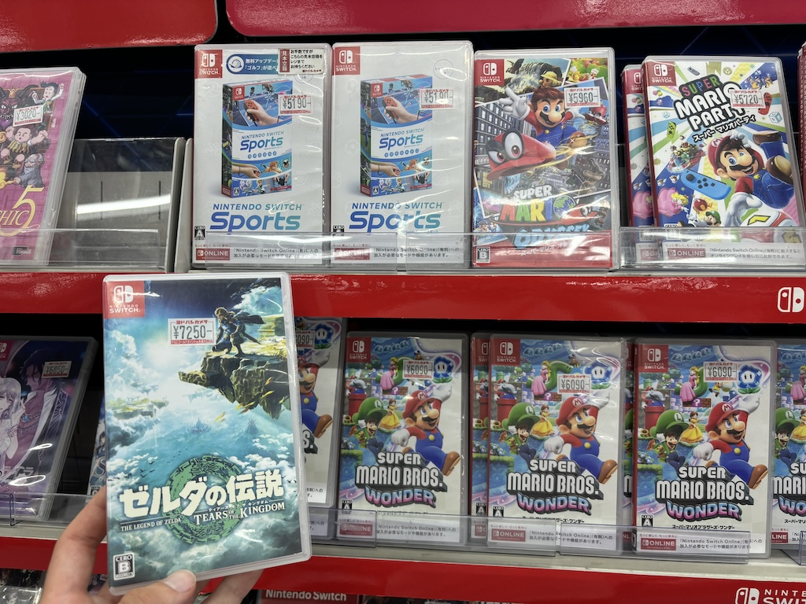

31th August to 5th September 2024
Greetings readers from Asia!
札幌から手紙を書いています
That's right, I am in northern Japan! I've officially jumped over the timezone line and for the first (and potentially last) time ever I've experienced a true 6 day week - reaching Sunday by day 6 instead of 7! It did catch me out - my hostel booking was for the same day as in Hawaii so just before boarding the flight I had to contact them and move everything forward a day. But nonetheless we've arrived in Japan, landing in Tokyo Narita before connecting to New Chitose airport in Hokkaido. I did want to touch on this layover just for a moment as I was pleasantly surprised that Nintendo had sponsored a space in the waiting area. Similar to the PS5 consoles in the Madrid airport, Tokyo Narita has a Nintendo Visitor Service Center with a couple of switches loaded with games to play while you wait for your flight. I suspect there was more to it than just that but that alone is great. Brilliant stuff.
A short Jetstar connection later and I land in New Chitose airport. Luckily for me all the signs in the airport and lots of them in Sapporo itself have the English equivalent next to the Japanese, in some cases the Mandarin too. I found the "Limosine" bus that was able to take me to Sapporo, rode to the center and walked on to my hostel. It was a normal bus, I believe Limosine bus is the translation for the term they use for coach. Either way I made it in before too late. As is tradition for me when traveling I took photos of the trams. Tram design is something that varies a lot between cities and countries and I find them unnecessarily interesting. They're slender, quite long and a single coach long here; This one is donning a large blue advertisement too.
On my first day wondering around the city I walked through Odori park to the !OldTownHall?. It was 200 yen to get in which after being in America for so long was surprisingly affordable. I entered and began reading the pieces of info on the buildings history through my google lens app when a very friendly Japanese member of staff came over and offered to show me around in English. Worried it might be a paid experience I expressed that I don't have any money. He said it was completely free and just wanted to practice his English. What a lovely guy!

The man taught me the history of the clock, explaining how the building was one of the first in Sapporo. During the Meiji period after Japan opens its borders to outsiders an American man named William Smith Clark. He set up Sapporo Agricultural College (now the University of Hokkaido) and first made the building to host military drills. This is why the building has western architecture. My private tour guide tells me people were generally very positive about Williams influence on the area. Many had not lived in a town with a clock tower in it and greatly benefitted to this new asset. Being able to tell the time from anywhere in Sapporo meant everyone could work and live to an accurate and consistent time. The bench at the far end of the upstairs hall in the photo below has a metal station of William. Lots of people took photos with him.

I thanked the man profusely for showing me around and telling me all about the history of the building. He passed me a flyer for a free English tour of Hokkaido University, something ran by volunteer friends of his. What a fantastic encounter, from merely being willing to chat with a local I was able to have 2 tours of Sapporo! I promptly signed up for the tour the next day. Below is a photo of some of the motorway signs in a junction near Odori park. The colour coding I now know signifies !INFO

Talking of Odori park, I've luckily come during the Sapporo Autumn Festival! I've heard many times online the best time to see this city is during the Snow Festival in February but as that didn't align with my plans I was pleasantly surprised that another event was on. The park is a 1 by 8 !CHECK block strip running through town with the Sapporo Radio Tower at one end and the !BUILDING at the other. At least 6 of these blocks had food stations serving all sorts of local dishes. This small vegetable dumplings and deep fried chicken dish was just a couple 100 yen and taste salty and greasy in all the best ways.

Something else that I wasn't expecting in Japan was the amount of these micro-sized cars. In the city center about one-third to one-half of the cars driving around were these very cute and highly space efficient cars. Most were Toyota and I would guess they're exclusively marketed to Japanese customers looking to save space in their city run around. I love them, but have to admit the crumple zones are so small they're probably slightly more dangerous to have a car accident in. Maybe they're made tough to ping off of other cars like ping pong balls. I don't know, I'm yet to see anything close to a car crash here, no one seems to speed.

That evening I had my first sushi dinner in Japan. I've learnt that sushi isn't an every day dish to the Japanese, saved for special occasions or at most enjoyed once a week as a meal out. This small restaurant I went to was great. They were very welcoming to me as a non-native speaker and served very fresh and affordable sushi.

Before heading back to the hostel I went to Mount Moiwa. Just by chance I was staying quite close to it so walked to the base cable-car station. A ticket to ride to the top and back was 2100 yen, or about 11 pounds. This was their mascot, a cute rabbit? I'm not sure.

A sort of christmas jingle was played continually during the ride to the top. In the winter when everything would have been blanketed by snow it would suit the ride very well. This was the view south towards Honshu and the rest of Japan

This was the view west; it being sunset the sky was drenched in orange, yellows and pinks. As you can see, a photo worthy moment.

Finally this was the view north, where most of my fellow cable-car riders were standing. The city is massive, stretching right out to the north western coastline.

Day 2 and I have to draw attention at least once on this blog to the Japanese toilets. Yes I did know they were electronically enhanced with cleaning spouts of water, heated seats and even music to mask your business. But I didn't expect the simple bit of plumbing engineering this one had. When refilling the tank, this toilet runs the water through a little sink for you to wash you hands in. My engineering side loved this - great use of an existing mechanism for a new purpose.
As explained above today I had a tour booked of Hokkaido University. It turns out I was the only one to book on to the tour! Some people would probably hate the idea of doing what should have been a group tour by themselves, unable to blend in to a crowd anonymously as you're shown around. But the 2 tour guides who showed me around were really lovely and very good at English. This second point is very important, having not yet mastered all 20,000 common kanji in the 2 days I've been here. Hopefully in a few more days I'll have the hang of it.
新渡戸 稲造
This is a bust of Nitobe Inazō (Nitobe being his surname). He was one of the first students at William Clark's newly set up Agricultural College performing exceptionally well. This would be a good point to mention something both tours taught me. The first class that studied at the college were taught by William Clark himself. As a result all the lesson were in English. None of the students had studied English, yet out of the 24 that took the class 13 managed to pass. Nitobe was one of these students, later going on to study in the United States and then Tokyo, leading an impressive academic career. He married a woman named Mary from Philadelphia and wrote the book Bushido, the soul of Japan. It was one of the first publications about culture and life in Japan that was available to the rest of the world, a first look into what Japan was like. I told the tour guides I'll happily read it while I'm here if I can find a copy in English.
Here's another bust of William Clark, found of the university. He mainly taught agriculture. I asked the tour guides if people were accepting of a white man coming to Sapporo and building universities and western structures. Hokkaido being a very cold place, growing crops is tough. Clark supposedly helped the people grow plentiful food even during harsher years. For many it was also an opportunity to study that they had heard about abroad but couldn't reach. It might be the first story I've heard of where a westerner enters a country, changes a bunch of stuff and is generally praised for doing so.
This is a kerosene box. I took a photo of it because not because of what's inside the box, but because of where the box is. Snow regularly gets this high in the winter here, so gas boxes like this are seen suspended quite high above the ground all over town.
Beep boop

Beep boop

Beep boop

Beep boop
Beep boop

Beep boop
Beep boop

Beep boop

Beep boop

Beep boop
Navigate home